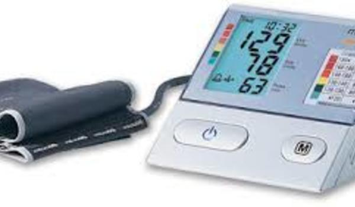

Измеритель артериального давления BP A100 c адаптером

- 
Измеритель артериального давления BP A100 c адаптером
Измеритель артериального давления (или тонометр) Microlife BP A-100 - это точный и надежный медицинский прибор, с фиксацией манжеты на плече, который предназначен для регулярного измерения и контроля уровня артериального давления и частоты пульса в домашних условиях.
Автоматический тонометр Microlife BP A-100 обладает великолепной точностью, подтвержденной клиническими испытаниями. Прибор прошел испытания по протоколам Европейского Гипертонического Общества (ESH) и Британского Общества Гипертонии (BHS). Точность измерителя артериального давления и частоты пульса Microlife BP A-100 соответствует наивысшей оценке А/А.
Прибор оснащен PAD-технологией диагностики аритмии, которая распознает самые первые симптомы этого заболевания, отличает действительные признаки аритмии от схожих симптомов, вызванных, например, движениями руки во время измерения. Большой трехстрочный дисплей, крупные кнопки с подсветкой, а также наличие отделения под манжету и информационная зона - основные "плюсы" эргономичного дизайна тонометра Microlife BP A-100.
В комплект поставки также входят универсальная манжета, Microlife M-L, размером 22 - 42 см и сетевой адаптер Microlife AD-1024C.
Тонометр Microlife BP A100 является один из самых востребованных на российском рынке. Сочетая точность, надежность и технологичность, тонометр Microlife BP A-100 остается простым в управлении, комфортным в использовании и доступным по цене.
Цена по запросу